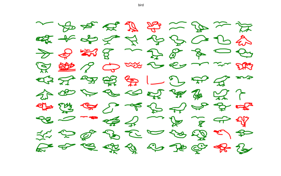

Doodle Buzz -- Using Deep Learning to do Sketch Recognition
Zac Letian Chen, Zhiyong Deng, Xiangyu Li, Lijiang LongFall 2018 CS 4803 / 7643 Deep Learning: Class Project
Georgia Tech
Abstract
Understanding sketches on mobile devices becomes increasingly important in this era. We worked on a Kaggle competition where Google released 50 million drawings for a deep learning network to classify. To solve this problem, we tested and fine tuned 3 kinds of different networks that fits the problem domain: 2D convolutional networks, 3D convolutional networks and recurrent neural network. The highest accuracy (0.900 mean average precision @ 3 score) is achieved using Mobilenet V2, a fast version of 2D convolutional network. We also analyzed results of all models and summarized lessons learned.Teaser figure
Since we have several models, it is hard to give a network overview. Therefore, we put an iframe linked to the Doodle drawing game data page, from which the dataset of this report is drawn. You could select some classes to see the sketching data obtained. You could also try the game by clicking here.Introduction / Background / Motivation
What did you try to do? What problem did you try to solve? Articulate your objectives using absolutely no jargon.
With the prevalence of touchscreen devices, understanding and characterization of sketches are becoming increasingly important. However, we don’t have a good way yet to understand sketches. This is because sketches are different from photos in that sketches, in most cases, are high level abstraction of human perceptions. Sketches can present an appropriate level of semanticity that depicts objects but could also be very illustrative and subjective. They may vary between each individual and culture. As a result, tools used for image analysis, which are pixel perfect depictions, are not appropriate for sketch analysis. Moreover, sketching is not static pixels. Instead, it’s a dynamic process where individuals gradually draws the object based on their experience. These challenges drove the recent surge of sketch research.One major obstacle of all sketch researches is the lack of sketch data. Luckily, google has made available 50M drawings on kaggle which encompassing 340 label categories. All the categories in the dataset contains more than 110k samples. These data are released under “Quick, Draw” which is an experimental game to educate the public in a playful way about how AI works. Users draw sketches prompted by the game to depict a certain category. A typical sketch is shown below where the left is the original data. Different strokes are shown as different colors. Each stroke is represented as a series of 2 dimensional points on a 256x256 canvas. The picture shown on the right is a simplified version where dots roughly on a line are simplified as one single line.
How is it done today, and what are the limits of current practice?
There are mainly three ways to tackle the sketch recognition.The first one is through Convolutional Neural Network (CNN). It is quite natural to just regard the sketch as a normal image and perform whatever CNN architecture upon it. Though the idea is simple, researchers point out we could still incorporate some domain knowledge in sketched images, such as larger first layer filter because of the sparseness of the feature, deeper but higher dropout rate since we need more robust features that normal image [1, 2]. Because of the robustness of features, some papers also point out that we could use the features from CNN to do other kind of supervised learning, such as kNN [3] or SVM [4]. Though CNN is well-developed for image recognition, its convolution structure doesn’t necessarily captures the features in sketches.
The second category algorithm of sketch recognition is RNN. We could view the input data as a sequence of strokes, and preprocess the raw data to a set of straight lines, which could be represented by the start point and the end point. The RNN basically tries to interpret the sequence of stroke. There are also several related papers in RNN branch [5, 6]. Despite the nature of using RNN to model stroke sequences, it is well known that RNN is much less studied than CNN and it is even harder to interpret the learning results.
There are also methods using traditional features and models, such as SIFT and HOG features and SVM[7] or kernel learning[8]. The performance of tradition methods are lower than deep models, especially on large dataset such as ours.
Besides three main categories, there are also methods that try to introduce specific neural network architecture for sketches. For example, Sketchpointnet [9] is brought forward for that it captures the rotate invariance and permutation invariance. We note that the data is very noisy. Some of the sketches are even handwritten letters of the required doodle. It is obvious that image feature based algorithm can’t handle this case. It is possible for RNN to learn to use some memory states to model this information, but it is still hard since handwritten letter data is not so much compared to sketch ones.
Who cares? If you are successful, what difference will it make?
Throughout human civilization, human sketches from ancient times can be found in prehistoric cave art and pictograms nowadays. With the proliferation of touchscreens, sketching has become a much easier undertaking for many – we can sketch on phones, tablets and even watches.Sketch recognition and prediction/completion closely relate to education, design and communication. As for education, children will benefit from it. For example, children can self-educate by a “Sketch AI”: children sketch a single object or even a scene, the “Sketch AI” explains to them by words. On the other hand, “Sketch AI” can give a sketch to children to ask for a phrase or give the description of a scene to ask the children to sketch it out. These are meaningful for young children.
Smarter “Sketch AI” makes designer or graph related worker more efficient. For example, Chemists sketch a lot chemical molecules and Bio-scientist draw a lot cell organs. A “Sketch AI” is able to help rearrange these sketch and make it more standard and easier to retrieve and share. House designers draw a lot typical objects,such as a sink and a “Sketch AI” with completion function will get them rid of this repeated work, and help them to complete a sketch of sink in any possible angle and shape.
Also, sketch is a way to communication which is especially important when the official description of the things is off one’s mind. For example, you want to buy a swimming goggle, but you don’t know the terminology and now you can sketch it and search. Then here temporary/real-time sketch prediction/completion is useful. Like phrase completion in search engine, “Sketch AI” can do sketch prediction and even completion basing on the temporary sketch to make life easier.
Finally we hope that better computational understanding of sketches will lead to better computer accessibility. Virtually everybody is able to sketch a face or recognize a sketched face. Writing and reading, which today are still the standard way of communicating with computers, are much less widespread. By some definitions, functional illiteracy, even in first-world countries, is up to 20% of adults. If computers were to understand sketches as we do, sketching would give a much larger audience access to the data that has been gathered digitally over the last decades.
Approach
We firstly preprocess all the data using a public kernel on Kaggle named “Shuffle-csv”. It samples first 30k doodles from each of 340 category, which normalizes the categories in the dataset. In total, there are around 10 million samples. More importantly, it distributes the training data evenly and randomly into 100 csvs.What did you do exactly? How did you solve the problem? Why did you think it would be successful? Is anything new in your approach?
MobileNet / ShuffleNet
We exam Mobilenet V2 and ShuffleNet V2’s performance in this section. Because the finished sketch is a static picture, it is intuitive to train a CNN.Because firstly this “Sketch AI” is supposed to be implemented in mobile devices and secondly sketch has less complexity, in other words, less features than ordinary picture, small and computation-efficient CNN architecture network would be preferred instead of heavy ones, such as Resnet.
ShuffleNet V2 bases on the following rules to achieve efficient computation.
G1. Equal channel width minimizes memory access cost (MAC).
G2. Excessive group convolution increases MAC
G3. Network fragmentation reduces degree of parallelism
G4. Element-wise operations are non-negligible
ShuffleNet V2 introduces a simple operator called channel split. It is illustrated in Figure below. At the beginning of each unit, the input of c feature channels are split into two branches with c − c′ and c′ channels, respectively. Following G3, one branch remains as identity. The other branch consists of three convolutions with the same input and output channels to satisfy G1. The two 1 × 1 convolutions are no longer group-wise, unlike ShuffleNet v1. This is partially to follow G2, and partially because the split operation already produces two groups.

After convolution, the two branches are concatenated. So, the number of channels keeps the same (G1). The same “channel shuffle” operation as in ShuffleNet v1 is then used to enable information communication between the two branches.
After the shuffling, the next unit begins. Note that the “Add” operation in ShuffleNet v1 no longer exists. Element-wise operations like ReLU and depth- wise convolutions exist only in one branch. Also, the three successive element- wise operations, “Concat”, “Channel Shuffle” and “Channel Split”, are merged into a single element-wise operation. These changes are beneficial according to G4.
MobileNet V2 basically relies on Depthwise Separable Convolution to decrease computation burden. The basic idea is to replace a full convolutional operator with a factorized version that splits convolution into two separate layers. The first layer is depthwise convolution, which performs lightweight filtering on each input channel, while the second layer performs 1 x 1 convolution called pointwise convolution to build new features. Other improvements in MobileNet V2 includes Linear Bottlenecks and inverted residuals, both contribute to faster calculation while not sacrificing performance.
In our implementation, we firstly convert the time series input into static data. The original data of an instance consists of a series vectors. Each vector stands for a stroke. Within a vector there is a series of X-Y coordinates in time series. The image conversion is actually a time and memory consuming process. Firstly, most of the figures contain less than 10 strokes with average 25 points per stroke in the simplified dataset or only uses less than 500 bytes of data; a full scaled image we directly plots has 256x256 pixels netting 64k bytes of data, that is more than 100 times increasing. To solve this problem, we used python generator to generate data on the fly, and discard them after the training batch is over. Moreover, we resized the image to 64x64 grayscale. The time usage concerns us most and therefore we chose the most time-efficient json and cv2 library to parse strokes and plot them. Some samples of the final plotted image are shown in [figure 1]. In order to keep the time series feature in the original data, the saturation of colors decrease as time elapsed.
| Input Data Format | Batchsx64x64x1 grayscale picture | |
| Output Format | SoftMax output with 340 dimension each stands for one class | |
| Loss Function | Categorical Cross Entropy | |
| Optimizer | Adam, whose learning rate will decay when the performance of the model stop improving for 3 epochs. | |
| Layers | Not Trainable Layers | Channel Split layer, Channel Shuffle layer, Concat layer, MaxPooling, SoftMax layer. |
| Trainable Layers | BatchNormalization layer, Conv2D, one Depthwise Conv2D in every shuffle unit, one Dense layer right before the Softmax Classifier. | |
| Implementation | tensorflow + keras + numpy on python 3 | |
| Hyperparameter | Bottlenet ratio | Decide the size of channel in shuffle unit. Here we set Bottlenet ratio to 1, to make a small model. |
| Scale factor | The ratio to the standard output channels number of a stage Here we set scale_factor to 1, to make a small model. | |
| Learning rate of the optimizer | It decays automatically as the model stop improving for 3 epoch. | |
| Number of shuffle Units | Number of shuffle channel in every stage. We choose it by cross-validation. | |
| Pooling Layer | Max pooling or average pooling. We pick max pooling here, because max pooling is better to keep the feature, especially for grayscale sketch. Average pooling will depreciate the edge features of the plot, which are significant to sketch. | |
Since the raw input data of this problem is real time series data, it is easy to see that CNN model is not suitable for dealing prediction/completion task basing on the temporary data of this problem.
So beside the afterward classification task with CNN, we will tackle time series task with a 3D Convolution network and RNN network.
3D Convolution
Another approach we tried is using 3D convolution networks to analyse the sketches. As mentioned before, sketches are different from photos or images in that it contains both spatial and temporal information. We can think of these sketches as videos of people drawing strokes sequentially. As a result, this is similar to an video action recognition problem. One of the many ways for video analysis is 3D convolution networks. A comparison between typical 2D and 3D convolution network is shown below. These networks can encapsulate information related to objects, scenes and actions in a video.
| Input Data Format | Batchsx64x64x3x1 5D Tensors | |
| Output Format | SoftMax output with 340 dimension each stands for one class | |
| Loss Function | Categorical Cross Entropy | |
| Optimizer | Adam, whose learning rate will decay when the performance of the model stop improving for 3 epochs. | |
| Layers | Not Trainable Layers | MaxPooling, Softmax Layer |
| Trainable Layers | BatchNormalization layer, Conv3D Layer, Dense fully connected layer | |
| Implementation | tensorflow + keras + numpy on python 3 | |
| Hyperparameter | Kernel size | Kernel size choices are restricted because most sketches have only 3 or less strokes. A reasonable layers size is 3. Since 3d convolution require that the kernel size is less than the layer size, we can only work with a depth of 2. We ended up working with a kernel of size 3x3x2. |
| Learning rate of the optimizer | We pick this parameter through literature research. Since we are using Adam, learning rate will not influence our accuracy too much. | |
| Pooling Layer | Max pooling or average pooling. We pick max pooling here, because max pooling is better to keep the feature, especially for grayscale sketch. | |
RNN
We also tried RNN model to do the classification task. Unlike previous methods, RNN takes sequence of stroke information instead of an image. A stroke is defined as the path from finger touching to finger leaving the screen. Therefore, a stroke could be approximated as a series of pair of starting points and ending points, each representing a straight line. As a result, the input to RNN is a sequence of triples: (start point, end point, stroke ordering k) where the last component represents this line belongs to k-th stroke. The RNN architecture is illustrated in the graph below. Input firstly go through some 1D convolution layers to extract features from raw sequence, which is a common practice in such tasks. Then it goes through three layers of bidirectional LSTM. The reason why we choose bidirectional LSTM instead of vanilla LSTM is because it is beneficial to read the sequence of strokes both with forward and backward ordering. Bidirectional LSTM empirically improves the performance of sequence classification task [10 ]. Finally, it goes through two fully connected layer to communicate information globally to decide the probability of each category. The model has 3,661,408 total parameters and 3,659,354 trainable parameters. Including the model's configuration (topology), the model's weights and the model's optimizer's state, the model has the size of 14.7 MB in HDF5 file format. We organize the details of the model in the table.| Input Data Format | Batchs×Time×(x,y,stroke) 3D Tensors | |
| Output Format | SoftMax output with 340 dimension each stands for one class | |
| Loss Function | Categorical Cross Entropy | |
| Optimizer | Adam, whose learning rate will decay when the performance of the model stop improving for 3 epochs. | |
| Layers | Not Trainable Layers | Softmax layer, Dropout layer |
| Trainable Layers | BatchNormalization layer, Conv1D layer, LSTM layer, Fully-Connected layer | |
| Implementation | tensorflow + keras + numpy on python 3 | |
| Hyperparameter | Number of nodes in each layer | We experimented with several settings of node in each layer and then chose a setting with least parameters when the performance is the same. |
| Learning rate of the optimizer | We pick this parameter through literature research. Since we are using Adam and BatchNormalization, learning rate will not influence our accuracy too much. | |
The most important difference between RNN model and CNN model we believe is that RNN model could interpret the sequence of strokes as it wants, while the CNN model could only interpret it by analysing the visualized image. It is possible that in this task that image is not the best representation of the data and RNN could find another meaningful features directly from sequence of stroke. Ordering of strokes is essential in this task and we will talk about another method (data augmentation) to mitigate the influence of ordering in the next section.
Ensemble
Normally, ensembling models will make some improvements on model performance. So we experimented with combining different models previously mentioned using a fully connected layer. We also tried simple voting ensemble.Our voting methods are weighted. We used higher weight for better performing models on our validation set.
What problems did you anticipate? What problems did you encounter? Did the very first thing you tried work?
Data noise
As is described in the introduction of dataset, we have very noisy data that nearly 10% of the drawings are not identified by the original Google’s algorithm, which means there might be drawings that do not make sense at all, as shown in the below figure. For example, some pictures are just fully filled with strokes, making it all black. Therefore, we give the pictures that are originally successfully identified weight 1 and ones that are not weight 0.1, hoping unidentified image will not perturb our learning process on correct examples and still provides some useful information.

3D convolution
For 3D convolution network, the major problems we anticipate are complex input processing as well as a very large pool of parameters to train. Firstly, the sketches are composed of different numbers of strokes. However, the 3D convolutional networks must take a defined 5D tensor that has fixed dimensions. As a result, there has to be a good way to evenly distribute strokes to fixed number of layers. Secondly, 3D convolution suffers from higher number of parameters than 2D convolutions，which could lead to difficulties in training.The first thing we tried is simply taking the architecture of a previously published C3D model. However, it’s not working because the model is so large. Thus the training takes much longer than permitted by a single commit on Kaggle. To solve this problem, we deleted several convolutional layers and one dense fully connected layer to reduce the number of parameters to ⅓ of original size.
RNN
The first version of RNN does not contain Batch Normalization layer, which results in slow and unsteady training (30 epoches reaching training top-3-accuracy of 0.5). After adding batch normalization layer after each convolution layer, we could tune the initial learning rate to a larger one to increase the learning speed and still gain stability.As we already stated in the previous section, the ordering of the stroke matters significantly since people with different culture may tend to draw the same thing with different ordering, especially for people who are left handed. Therefore, we need to make sure that with different ordering, the classification result is essentially the same, since the result drawing won’t change whatever the ordering of strokes is. Whatever features the RNN is learning from sequence, they should be the invariant with stroke permutation, which is kind of similar to the permutation invariant architecture of PointNet. However, we do not tackle the problem through architecture but use a data augmentation technique specially for RNN. In the augmentation we changed the ordering of the strokes, without changing the ordering inside a stroke. This is because changing it would actually change what the stroke represents (unless we reverse the whole ordering, as we already implemented using bidirectional LSTM). In all, bidirectional LSTM together with data augmentation on permutation of strokes let the RNN learn features that will not depend on the order of the drawing.
We also did a search on the hyperparameters of the model. Enlarging the node number of each layer doesn’t give us much performance gain. Since we already have Batch Normalization, tuning learning rate is not necessary.
Experiments and Results
How did you measure success? What experiments were used? What were the results, both quantitative and qualitative? Did you succeed? Did you fail? Why?
ShuffleNet V2
On the training and validation set we generated locally, the performance is shown on the figure below. After 50 epochs of training, each having 800 steps with batch size 340, the model achieves 78% top-1-accuracy on local shuffled validation set. Notice that 85.1% Mean Average Precision @ 3 (MAP3) is achieved on the Kaggle Validation Set of “Quick, Draw! Doodle Recognition Challenge”. No gap between training and validation accuracy on the graph means there is no overfitting.MobileNet V2
The intuition behind MobileNet is essentially similar to ShuffleNet that it could use a much lower amount of parameter without much loss of precision. Because of the efficiency of Mobilenet, we are able to train it with 100 epoches, which makes it the best-performance model among our models. It actually achieves 0.900 MAP3 score on the public test set, which is impressive considering that the parameter is only 11M and the complex nature of the data. The training process is plotted in the figure below. Notice that it has huge accuracy spikes on validation set in the training process. It is not unusual since some other implementations of MobileNet has similar issues on Kaggle. We are not sure why this occurs, but our guess is that mobilenet has a lot fewer parameters than standard CNN, which makes it vulnerable to the noise in the data. If a batch consists a large portion of noise data, it could destroy the original representation. But in the end, the network performs steadily as we want. Therefore, it should not have overfitted the training data.3D Convolution
The change of loss over time is plotted below. This shows that the network is not working as expected to distinguish different kinds of sketches because both training and validation accuracy are very low.RNN
Using all the changes we make to vanilla LSTM network, we could obtain a performance of top-3-accuracy of nearly 0.9 on both training and validation data. The training process with top-1-accuracy is shown below. We note that the zigzag pattern is because of our data augmentation strategy. For every 8 epochs we are using the same data, with different ordering for every epoch. We could see the features learned is rather robust such that there is no gap between validation accuracy and training accuracy. However, the final performance of RNN is actually worse than MobileNet. We think it is because- MobileNet is a mature model and our RNN model is not that sophisticated. It is a general knowledge that CNN is studied much more thoroughly than RNN. And researchers tend to believe that CNN converges much faster than RNN. Tuning RNN is a difficult process that takes a lot of time. We may be able to do further hyperparameter tuning and architecture search to get better result since the expressiveness of RNN should be better than CNN in this problem.
- A more expressive model basically means it could have a larger modeling ability, making it harder for optimization algorithm to find best solution. On other words, though RNN may have lower modeling error than CNN, it may suffer from greater optimization error.
- In this problem, we truncate all the point sequence to length 100. It could hurt the accuracy if there is a lot of sketches with more than 100 points . Besides, a backpropagation of gradient to a 100 or longer length sequence is extremely expensive and hard to optimize.
Ensemble
We experimented finetuned stacking, stacking freezing previous trained weights, and voting. Both stacking methods performed worse than the original model, and voting gave us the best performing results.Finetuning the stacked model is siginificantly slower due to large amount of parameters.
We first experimented stacking the three best performing models: mobilenetv2, shufflenetv2, and RNN for 15 800-step epochs of 340 sample batches. Comparing the result at 15 epochs with only stacking mobilenetv2 with RNN, The training speed was 1.5 times slower with some 5% improvement in validation accuracy. However, we decided to continue only with two model stacking so that we can reach convergence faster. The graph below is the top category accuracy graph of the first 15 epochs of the three model stacking result.
We conclude our performance on the public test set into the following table
| model | epoch*step*batch | score |
| ShuffleNet V2 | 50*340*800 | 0.851 |
| MobileNet V2 | 50*340*800 | 0.9 |
| RNN | 300*340*64 | 0.81 |
| 3 model stacking | 15*340*800 | 0.878 |
| 2 model stacking | 45*340*800 | 0.854 |
| 2 model freezed | 40*340*800 | 0.854 |
| 2 model freezed | 120*340*800 | 0.861 |
| Voting | N/A | 0.898 |